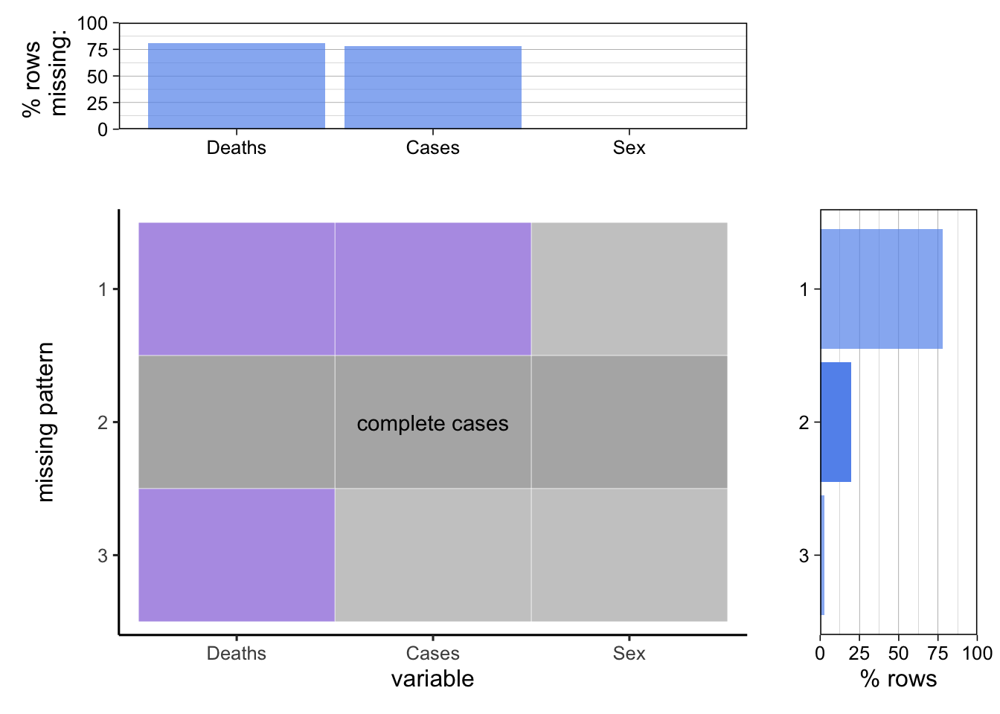
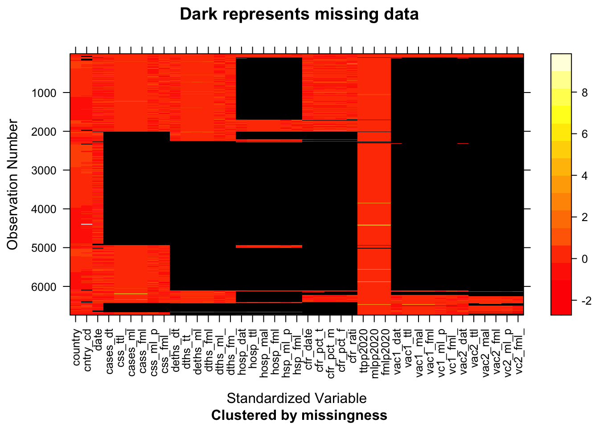
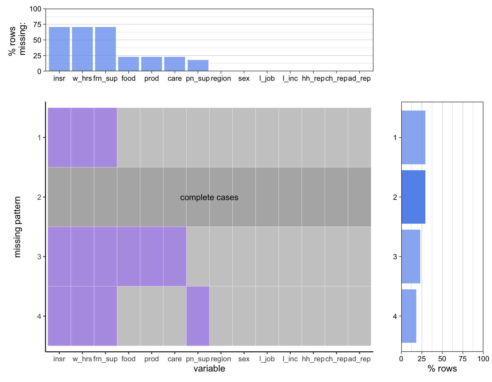

Chapter 3 Data
3.1 Sources
3.1.1 WHO COVID-19 Detailed Surveillance Data Dashboard
This dataset contains the demographic information and details about the COVID-19 cases for both the general population and health workers for over 200 countries from January 2020 to the present date. The data was collected by the World Health Organization and was published on their COVID-19 Detailed Surveillance Data Dashboard; they collected the data through official reporting to WHO, the website Our World in Data, the website FIND, and official public websites not officially reported to WHO (“Measuring the Shadow Pandemic: Violence against Women during Covid-19”).
There are 25,519 records in the dataset, with a total of 27 columns/variables. The majority of the variables are numeric data containing detailed information about the COVID-19 cases, such as the daily or weekly numbers of testing, cases, hospitalizations, discharged cases, and deaths; the rest of the variables are categorical text data containing the source of data and demographic information such as the region, country, and sex of the affected population. We will be using the portion of data that is focused on health workers to explore the impact of COVID-19 on health workers of different sexes.
Note that part of the dataset has been updated daily while the rest has been updated weekly, so each row contain the record for a specific day or week for patients of a specific sex in a specific country, depending on how often the data was collected for that specific country. Also, the data for many countries have missing values in quite a few variables regarding some details about the COVID-19 cases, such as the number of health worker cases and deaths.
3.1.2 COVID-19 Sex-Disaggregated Data Tracker
We obtained the data from the website of The Sex, Gender and COVID-19 Project produced collaboratively by Global Health 50/50, the African Population and Health Research Center and the International Center for Research on Women. The organizations collected sex disaggregated data on the indicators available from the WHO COVID-19 Detailed Surveillance Data Dashboard, and data for vaccinations from WHO Coronavirus Dashboard were integrated to the dashboard every month. Manual data collection was carried out every alternate month to supplement data on the indicators not available from WHO dashboard such as ICU admissions.
The dataset contains sex-disaggregated cumulative numbers and proportions of testing, cases, hospitalizations, ICU admissions, deaths, and vaccinations reported every two weeks for over 200 countries from April 2020 to June 2022. For instance, we have number of deaths for female and number of deaths for male respectively in addition to the total number of deaths. There are 67 varables and 6,739 observations in the dataset. The columns are all numeric except that country and a few columns of dates are in character form.
Data Source: https://globalhealth5050.org/the-sex-gender-and-covid-19-project/dataset/
3.1.3 Survey on Violence Against Woman During COVID-19
This set of data comes from the Rapid Gender Assessment surveys specifically focused on violence against women and COVID-19 (VAW RGAs) conducted by United Nations Women in 13 countries from April to September 2021. The data was collected by conducting face-to-face interviews along with remote surveys during the lockdowns. UN Women led this study in collaboration with Ipsos, with support from national statistical offices, national women’s machineries and a technical advisory group of experts to guide the overall survey process (“Measuring the Shadow Pandemic: Violence against Women during Covid-19”).
Each observation in the survey dataset is a female individual’s responses to the survey questionnaire. The survey questions are composed of three parts: questions on interviewee’s demographic information, health condition and personal safety. The data has 16,154 observations and 142 variables. The variables are comprised of mostly categorical text data and some numeric data.
Data Source: https://data.unwomen.org/publications/vaw-rga
3.1.4 Survey on Socioeconomic Impacts of COVID-19
This set of data contains male and female participants’ answers to United Nations Women’s rapid gender assessments (RGAs) questionnaires. The RGA was conducted by UN Women in at least 52 countries between March 2020 and March 2021, and focused on five areas of concern: 1) economic activities and resources; 2) unpaid domestic and care work; 3) access to goods and services, 4) emotional and physical wellbeing; and 5) relief measures (“Rapid Gender Assesments on the Socioeconomic Impacts of COVID-19”).
There are a total of 6 datasets published, 1 for each region/continent. The 6 regions are Asia and the Pacific, Arab states, Europe and Central Asia, East and Southern Africa, West and Central Africa, and Americas and the Caribbean. Since the data for Asia and the Pacific are already highly processed, we will be using only the datasets for the other 5 regions in this project. The 5 datasets used contain 4,119 to 20,957 records and 102 to 236 variables, while each record is an individual’s responses to the survey questionnaire. The majority of the variables are categorical text data that contain the interviewee’s demographic information and answers to the survey questions, while the minority are numeric data representing the interviewee’s age, household size, number of children, etc. The 5 datasets are combined to create a dataset of all regions, and the resulting final dataset contains 71,251 records and 14 variables, which are all categorical data that represent the interviewee’s region, sex, and answers to the survey questions.
Note that since the questionnaires for each region are different, resulting in different number of variables in the data for each region, we selected 14 variables that resulted from the common questions across the questionnaires for the 5 regions. Even so, there are still quite a few missing values in many of the variables.
Data Source: https://data.unwomen.org/rga
3.1.5 References
“Measuring the Shadow Pandemic: Violence against Women during Covid-19.” UN Women Data Hub, UN Women, 24 Nov. 2021, https://data.unwomen.org/publications/vaw-rga#_dashboardFilterRGA.
“Rapid Gender Assesments on the Socioeconomic Impacts of COVID-19.” UN Women Data Hub, UN Women, 16 Dec. 2021, https://data.unwomen.org/rga.
3.2 Cleaning / transformation
3.2.1 WHO COVID-19 Detailed Surveillance Data Dashboard
Since we only need the data for the health workers, we would only select the variables indicating the worker’s sex, the number of health worker COVID-19 cases, and the number of health workers that died of COVID-19. Since in the original dataset, each row contain the record for a specific day or week for patients of a specific sex in a specific country, we would group the data by sex and then sum up the COVID-19 cases and deaths in each row to get the total count of COVID-19 cases and deaths for health workers of each sex.
3.2.2 COVID-19 Sex-Disaggregated Data Tracker
The dataset have some empty entries. To ensure we detect all the missing values, we convert empty entries to NA before we analyse missing values. The columns of dates are all in character form, so we convert them to date format. We omit a few countries do not have total population since population is important for our analysis.The data set has too many missing values and some columns has no entries. Also different countries has different number of rows of reported data and the dates are not consistent. We would select the earliest non-empty observation for each country to analyse.
3.2.3 Survey on Violence Against Woman During COVID-19
The leves of some columns in the dat set are long responses to the questionaire, like “No, stay the same” and “Work for someone else for pay”. We need to recode the levels. However, sine there are 142 varaibles and the levels of reponse is different for each question, it is hard to preprocess all the variables all at once. Also, the data set has already had some recoded columns in it, which make it more complicated to recode the variables. Therefore, we just recode levels of some variables on the fly when needed.
## [1] 16154 1423.2.4 Survey on Socioeconomic Impacts of COVID-19
The 5 datasets are combined to create a dataset of all regions. 14 variables that resulted from the common questions across the questionnaires for the 5 regions are selected from the original 102 to 236 variables of the 5 datasets. Then, 5 datasets with the 14 selected variables are combined to create the final dataset that contains a total of 71,251 records. The 14 selected variables are all categorical data that represent the interviewee’s region, sex, and answers to the survey questions.
3.3 Missing value analysis
3.3.1 WHO COVID-19 Detailed Surveillance Data Dashboard
The dataset analyzed is the original dataset before any transformation is applied.
Only less than 25% of the data are complete cases without any missing values. The variable “Sex” has no missing value while the other two have more than 75% rows missing. The rows miss either the “Deaths” variable or both the “Deaths” and “Cases” variables, while more than 75% of the rows miss both the “Deaths” and “Cases” variables. Rows with missing would be removed since they do not contribute to the numbers of health worker COVID-19 cases and deaths and it does not make sense to impute them.

3.3.2 COVID-19 Sex-Disaggregated Data Tracker
The dataset has 67 variables and 6739 observations:
## [1] 6739 67## na_count na_percent
## country 0 0.00
## country_code 186 2.76
## date 149 2.21
## sexdisagg_data 6739 100.00
## date_tests 6421 95.28
## tests_date 6421 95.28
## tests_male 6421 95.28
## tests_female 6421 95.28
## tests_male_pct 6421 95.28
## tests_female_pct 6421 95.28
## date_cases 3151 46.76
## cases_date 3151 46.76
## cases_total 3325 49.34
## cases_total_sum 3151 46.76
## cases_male 3151 46.76
## cases_female 3152 46.77
## cases_male_pct 3151 46.76
## cases_female_pct 3151 46.76
## date_deaths 4148 61.55
## deaths_date 4148 61.55
## deaths_total 3812 56.57
## deaths_total_sum 4151 61.60
## deaths_male 4151 61.60
## deaths_female 4151 61.60
## deaths_male_pct 4152 61.61
## deaths_female_pct 4152 61.61
## hosp_date 6118 90.78
## hosp_total 6120 90.81
## hosp_male 6121 90.83
## hosp_female 6121 90.83
## hosp_male_pct 6121 90.83
## hosp_female_pct 6121 90.83
## icu_date 6414 95.18
## icu_total 6422 95.30
## icu_male 6421 95.28
## icu_female 6422 95.30
## icu_male_pct 6415 95.19
## icu_female_pct 6415 95.19
## date_healthcare 6495 96.38
## healthcare_date 6495 96.38
## healthcare_tot 6496 96.39
## healthcare_total 6496 96.39
## healthcare_male 6496 96.39
## healthcare_female 6496 96.39
## healthcare_male_pct 6495 96.38
## healthcare_female_pct 6495 96.38
## date_cfr 4513 66.97
## cfr_date 4513 66.97
## cfr_pct_tot 4515 67.00
## cfr_pct_male 4513 66.97
## cfr_pct_female 4513 66.97
## cfr_ratio 4522 67.10
## totpop2020 99 1.47
## malepop2020 99 1.47
## femalepop2020 99 1.47
## vac1_date 6061 89.94
## vac1_total 6092 90.40
## vac1_male 6093 90.41
## vac1_female 6093 90.41
## vac1_male_pct 6093 90.41
## vac1_female_pct 6093 90.41
## vac2_date 6061 89.94
## vac2_total 6251 92.76
## vac2_male 6235 92.52
## vac2_female 6235 92.52
## vac2_male_pct 6251 92.76
## vac2_female_pct 6251 92.76Now we select 41 variables that we are interested in from the 67 variables:
## [1] 6739 41## NOTE: The following pairs of variables appear to have the same missingness pattern.
## Please verify whether they are in fact logically distinct variables.
## [,1] [,2]
## [1,] "cases_date" "cases_male"
## [2,] "cases_date" "cases_male_pct"
## [3,] "cases_date" "cases_female_pct"
## [4,] "cases_male" "cases_male_pct"
## [5,] "cases_male" "cases_female_pct"
## [6,] "cases_male_pct" "cases_female_pct"
## [7,] "deaths_total_sum" "deaths_male"
## [8,] "deaths_total_sum" "deaths_female"
## [9,] "deaths_male" "deaths_female"
## [10,] "deaths_male_pct" "deaths_female_pct"
## [11,] "hosp_male" "hosp_female"
## [12,] "hosp_male_pct" "hosp_female_pct"
## [13,] "cfr_pct_male" "cfr_pct_female"
## [14,] "totpop2020" "malepop2020"
## [15,] "totpop2020" "femalepop2020"
## [16,] "malepop2020" "femalepop2020" From the pattern of plot of missing values, we can see that the five variables related to number of cases (case_total, case_female, case_male, cases_male_pct cases_female_pct) are highly related. The five columns variables related to number of deaths are highly related (deaths_total_sum,deaths_male,deaths_female,deaths_male_pct,deaths_female_pct). The five columns variables related to number of people get hospotalized are highly related(hosp_total,hosp_male,hosp_female,hosp_male_pct,hosp_female_pct). Variables related to vaccination also show the similar pattern.
3.3.3 Survey on Violence Against Woman During COVID-19
## na_count_vaw na_percent
## Respondent_Serial 0 0.00
## Country 0 0.00
## Locality 0 0.00
## Marital_Status 0 0.00
## N_children 38 0.24
## hh_size 0 0.00
## Education 0 0.00
## Employment 0 0.00
## Employment_Other 15744 97.46
## Earning_Income 7472 46.25
## Earn_Spouse 12861 79.61
## Disability 0 0.00
## hh_income 0 0.00
## FIES_1 0 0.00
## FIES_2 0 0.00
## FIES_3 0 0.00
## FIES_4 0 0.00
## FIES_5 0 0.00
## FIES_6 0 0.00
## FIES_7 0 0.00
## FIES_8 0 0.00
## B02_1_Phase1 16154 100.00
## B02_2_Phase1 16154 100.00
## B02_3_Phase1 16154 100.00
## B02_1_Phase2 4857 30.07
## B02_2_Phase2 4857 30.07
## B02_3_Phase2 4857 30.07
## B03 16154 100.00
## mental_stress 0 0.00
## C02 0 0.00
## C03 0 0.00
## C04 0 0.00
## C07 0 0.00
## C08 0 0.00
## C10 0 0.00
## C11 0 0.00
## C12 0 0.00
## C13 4441 27.49
## C13_Other 15817 97.91
## C13_O0 16154 100.00
## C14 0 0.00
## C15 0 0.00
## C16 0 0.00
## C17 3348 20.73
## C17_Other 15837 98.04
## C17_O0 16154 100.00
## C19 1759 10.89
## C20 1759 10.89
## C21 0 0.00
## C22 0 0.00
## C23_1 13616 84.29
## C23_2 13616 84.29
## C23_3 13616 84.29
## C23_4 13616 84.29
## C23_5 13616 84.29
## C23_6 13616 84.29
## C23_7 13616 84.29
## C23_8 13733 85.01
## C23_9 13733 85.01
## C23_10 14102 87.30
## C23_11 13817 85.53
## C24 0 0.00
## C25_Phase1 16154 100.00
## C25_Phase2 4857 30.07
## C26 14945 92.52
## C26_1 16052 99.37
## C26_2 16052 99.37
## C30_1_recode 1242 7.69
## C30_2_recode 1242 7.69
## C30_3_recode 1242 7.69
## C30_4_recode 1242 7.69
## C30_5_recode 1242 7.69
## C30_1_grouped 0 0.00
## C30_2_grouped 0 0.00
## C30_3_grouped 0 0.00
## C30_4_grouped 0 0.00
## C30_5_grouped 0 0.00
## rC30_grouped 0 0.00
## C31_1 0 0.00
## C31_2 0 0.00
## C31_3 4857 30.07
## C31_4 0 0.00
## C31_5 0 0.00
## C31_6 4857 30.07
## C31_7 16154 100.00
## C31_8 16154 100.00
## C31_Other 16154 100.00
## C31_O0 16154 100.00
## SS0_1 0 0.00
## SS0_2 0 0.00
## SS0_3 0 0.00
## SS0_4 0 0.00
## SS0_5 0 0.00
## SS0_6 0 0.00
## SS0_7 0 0.00
## SS0_8 0 0.00
## SS0_9 0 0.00
## SS0_10 0 0.00
## SS0_98 0 0.00
## SS0_99 0 0.00
## SS0_00 0 0.00
## SS0_Other 16154 100.00
## SS0_O0 16154 100.00
## weight 0 0.00
## A09 16154 100.00
## A10 16154 100.00
## C05 16154 100.00
## C06 16154 100.00
## C09 16154 100.00
## C27 16154 100.00
## AgeCat 0 0.00
## Region 0 0.00
## rA04_1 12968 80.28
## cA12 0 0.00
## rA12 0 0.00
## rA05 90 0.56
## rS11 0 0.00
## TB_C02 0 0.00
## TB_C03 0 0.00
## TB_C26 15345 94.99
## TB_B02_1_Phase2 4857 30.07
## TB_B02_2_Phase2 4857 30.07
## TB_B02_3_Phase2 4857 30.07
## TB_B02_1_Phase1 16154 100.00
## TB_B02_2_Phase1 16154 100.00
## TB_B02_3_Phase1 16154 100.00
## BR_rA01 11 0.07
## BR_rA02 46 0.28
## BR_rA03 13 0.08
## BR_rA04 19 0.12
## BR_rA06 0 0.00
## child 38 0.24
## BR_rA11 317 1.96
## BR_rrC02_03 0 0.00
## BR_rC07 948 5.87
## BR_rC19 1927 11.93
## BR_rC21 51 0.32
## BR_rC10 0 0.00
## BR_rC14 0 0.00
## BR_rC30_recode 4857 30.07
## Cweight 0 0.00
## Pweight 0 0.00The variable N_children is missing for about one forth of the respondents. About 7.69% of the samples have NA values for the three variables C30_1_recode C30_2_recode, C30_3_recode, C30_4_recode, C30_5_recode. The dataset also have quite columns with all missing values.
3.3.4 Survey on Socioeconomic Impacts of COVID-19
The dataset analyzed is the combined dataset that has already been transformed.
Only less than 30% of the data are complete cases without any missing values. The variables representing region, sex, lost job, lost income, domestic responsibility, childcare responsibility, and adultcare responsibility have no missing value, while the ones representing food access, sanitary product access, medical care access, and partner support have less than 25% rows missing and the ones representing friend and family support, work hours, and unemployment insurance have around 75% rows missing. The rows with missing values have NAs in 3, 4, or 6 of the variables that contain NAs. Rows with missing values would not be removed altogether, but each set of data extracted for plotting a single chart would have their missing values removed right before each single chart is plotted in order to reduce data loss. It does not make sense to impute the missing values.
